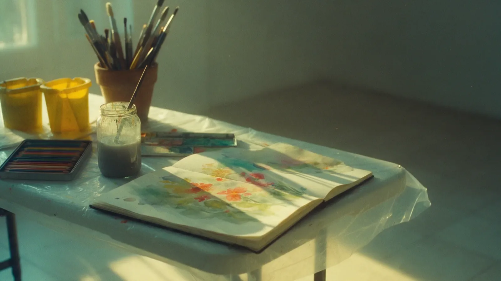
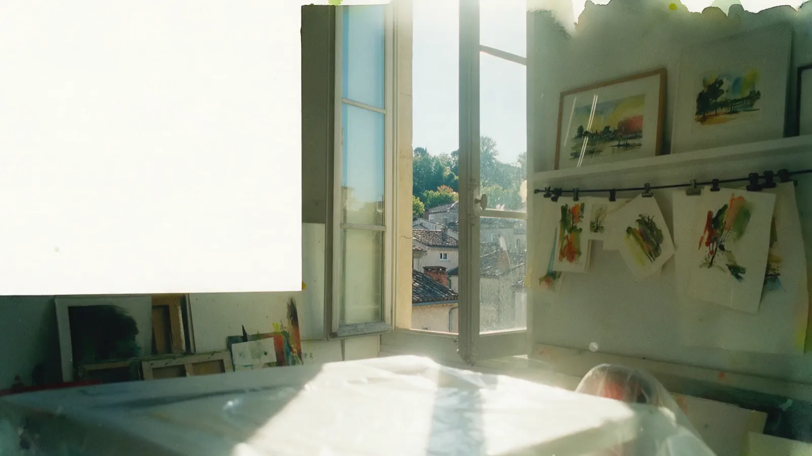
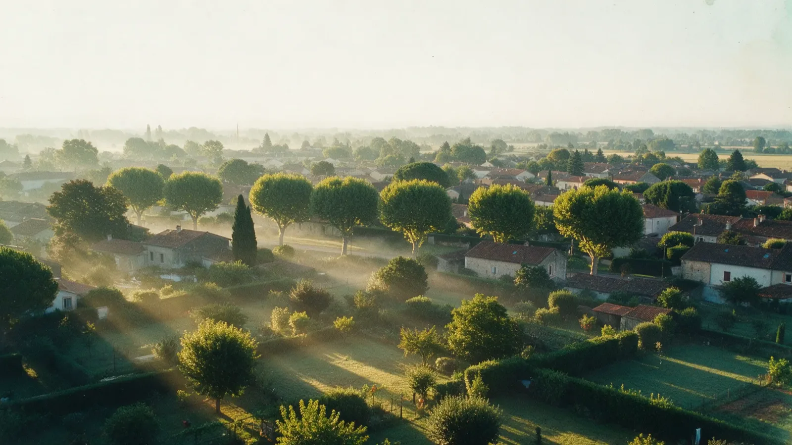
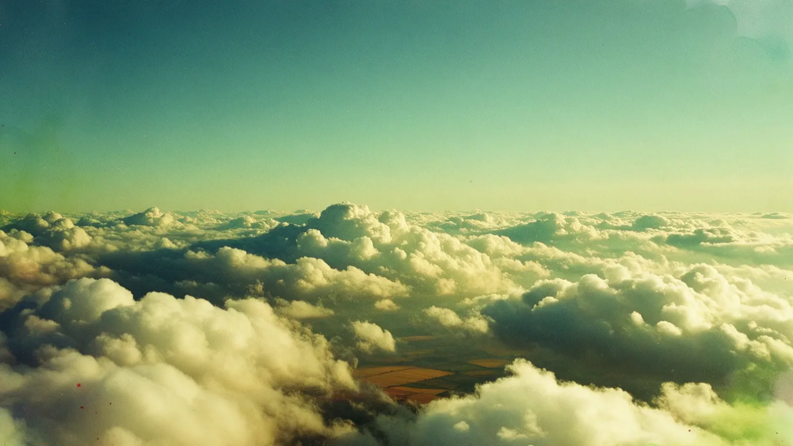
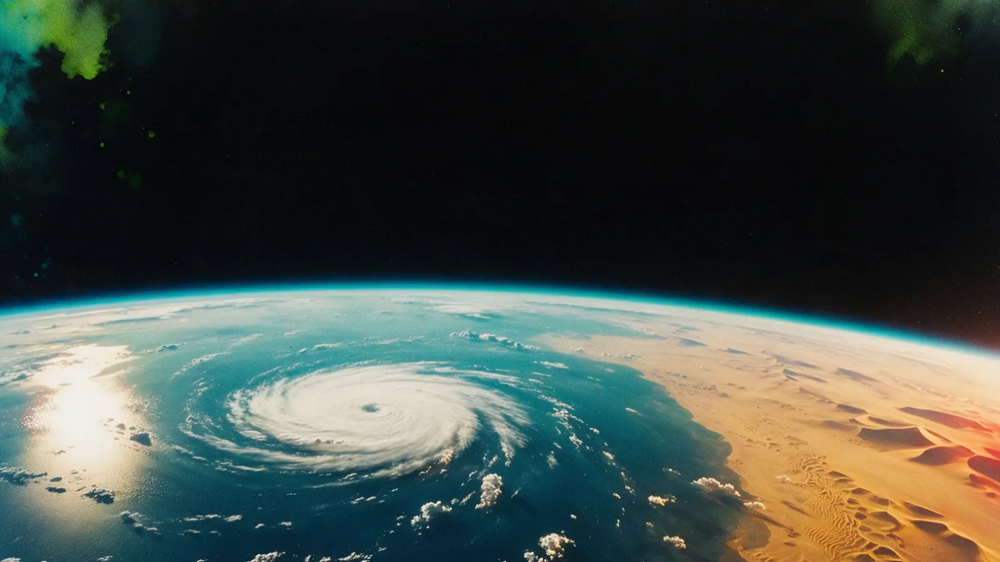
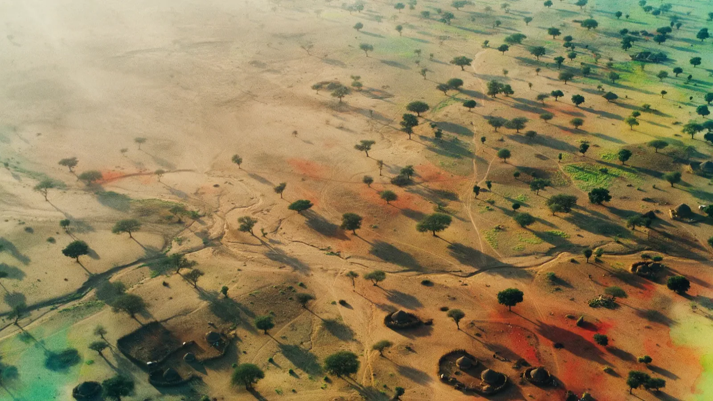
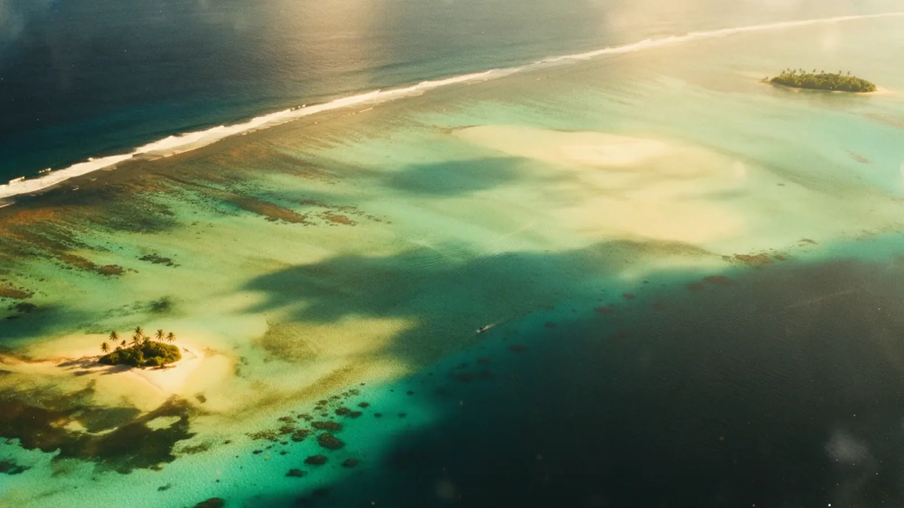
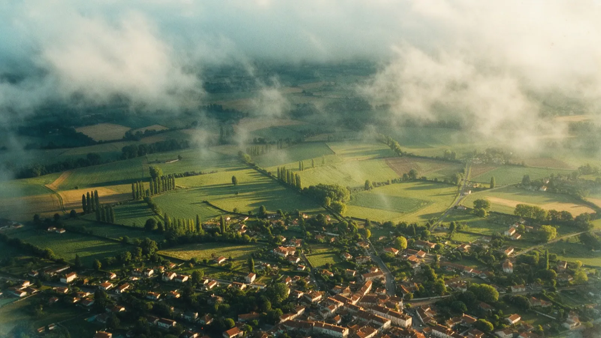

Ateliers de peinture à partir de 8 ans, et cours particuliers pour adultes, avec Muriel Oberlé.
On commence par partir.
Muriel Oberlé a passé son enfance en Afrique du Nord et en Afrique noire. Ses toiles s'en souviennent : des figures qui dansent, des jarres, des cactus, du turquoise et de l'ocre.
Encre, collage, cire, empreinte, écriture. On essaie, on rate, on recommence, et c'est le sujet.
Atelier enfants
Le geste, la couleur, le carnet. On sort de la feuille.
Atelier ados
Le trait, le cadrage, les matières. Un carnet qu'on tient.
Atelier collectif
Huile, acrylique, techniques mixtes, en petit groupe.
Cours particulier
Un projet, votre rythme, en tête à tête.
Dites-moi qui vient et ce qui vous attire. Je réponds à la main.